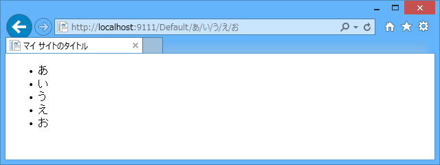
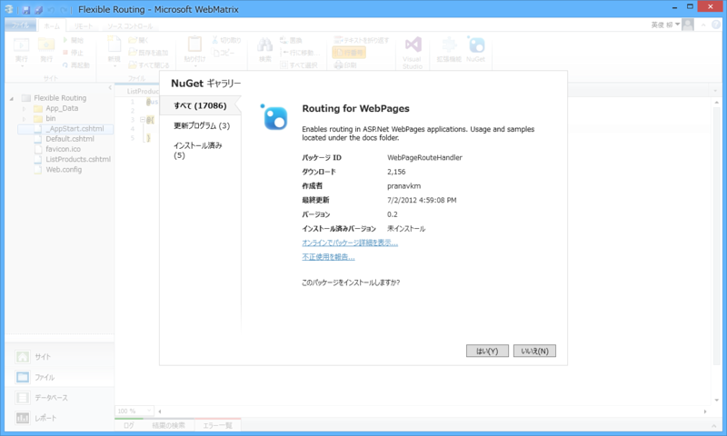
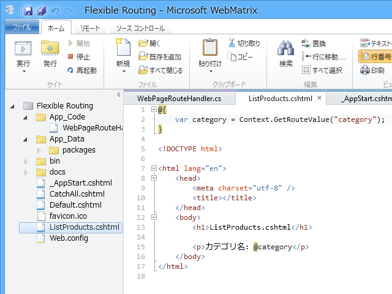
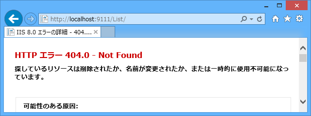
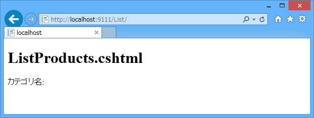
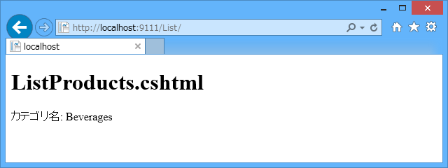
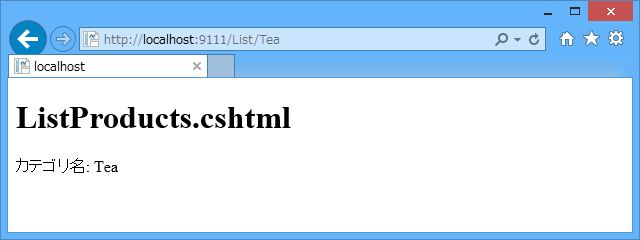
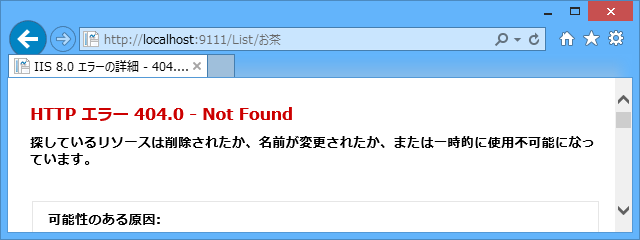
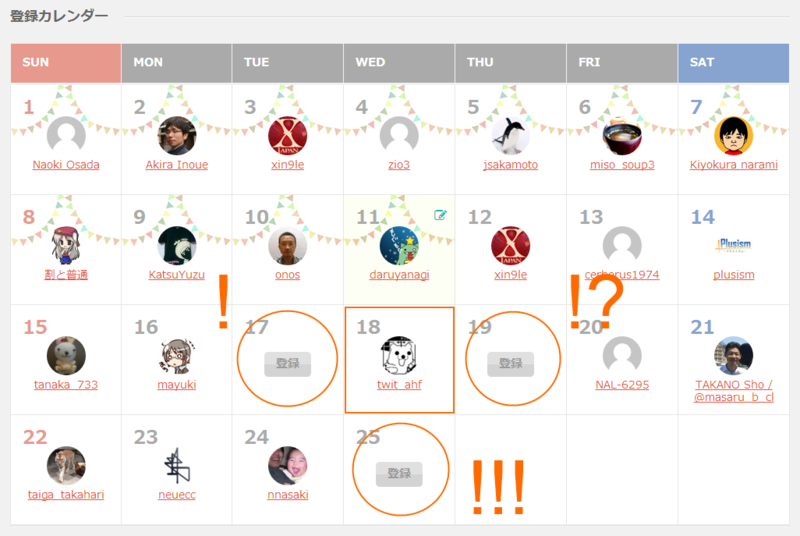

ASP.NET Web Pages: より柔軟なルーティングを利用する
公開日：
※ この記事は One ASP.NET Advent Calendar 2013 の11日目の記事です。@ono さん、ありがとうございます！
ASP.NET Web Pagesは4番目の選択肢です。Razorのシンタックスのおかげで、PHPやクラシックASPに似た開発経験を提供してくれます。
どうも恐縮です！ “4番目の選択肢”が大好きな @daruyanagi です。ウェブベースのアプリを作るとき、ASP.NET Web Pages は LightSwitch の次にお勧めデス。とくに動的な“ペライチ”*1のサイトを作るにはピッタリで、MVC とか API とか Single Page Application とかわかんない僕でも少しはわかるぐらいの簡単さ。これから広大な One ASP.NET の海に漕ぎ出そうという入門者にはピッタリの技術なのではないかと思います。とくに年頃の娘さんにはお勧めしたいですね！
――ま、そんなことは置いておいて。
今日は ASP.NET Web Pages におけるルーティングの話です。“ペライチ”のサイトを作るには実はあまり関係ないのですけど、データベースを扱うページを作る場合、知っておくと URL がカッコいいサイトが作れるのではないでしょうか。SEO にもいいらしいです。知らんけど。
規約ベースのルーティング
勝手にそう呼んでみましたが、ASP.NET Web Pages で一番簡単かつ基礎となるルーティングです。
ASP.NET Web Pages は /Default/あ/い/う/え/お というリソースへのリクエストを受け取ると、~/Default/あ/い/う/え/お.cshtml を探しに行きます。なければ ~/Default/あ/い/う/え.cshtml を、次は ~/Default/あ/い/う.cshtml を……。そしてついにこんな ~/Default.cshtml を発見します。
<!-- ~/Default.cshtml --><!DOCTYPE html>
<html lang="ja"> <head> <meta charset="utf-8" /> <title>マイ サイトのタイトル</title> <link href="~/favicon.ico" rel="shortcut icon" type="image/x-icon" /> </head> <body> <ul> @foreach (var data in UrlData) { <li>@data</li> } </ul> </body> </html>
後ろにくっついていた あ/い/う/え/お は“/”で区切られ、UrlData に配列（IList

これを利用すれば、/Wiki/?title=だるやなぎ ではなく /Wiki/だるやなぎ だったり、/Product/?name=綾鷹&count=10 ではなく /Product/綾鷹/10 という URL を設計できると思います。ただし、ちょっとユルユルな感じはしますね。綾鷹の例で言えば、UrlData[0] = name / UrlData[1] = count というバインディング（紐づけ）を自分で管理しなければならない。設計が変わって、新しいパラメーターが追加されたときやパラメーターの順番が入れ替わったとき、刻の涙をみる羽目に陥るかも。
そのほかにも、ASP.NET Web Pages はいろいろなルーティング規約（？）があって、知っておくと割といろいろなことができます。もし興味があれば、この記事を参照してください（ちょっと古いし間違ってるかもだけど）。
URL リライト
IIS 7.0 以降であれば URL リライトモジュールを利用してもいいと思います。
たとえば、
http://sample.com/Pages.cshtml/Hoge http://sample.com/Pages/Hoge
を
http://sample.com/Hoge
に飛ばしたい場合、Web.config を以下のように編集します。
<?xml version="1.0"?> <configuration> <system.webServer> <rewrite> <rules> <rule name="Daruboard" stopProcessing="true"> <match url="^(.*)$" ignoreCase="false" /> <conditions> <add input="{REQUEST_FILENAME}" matchType="IsFile" ignoreCase="false" negate="true" /> <add input="{REQUEST_FILENAME}" matchType="IsDirectory" ignoreCase="false" negate="true" /> </conditions> <action type="Rewrite" url="Pages.cshtml/{R:1}" /> </rule> </rules> </rewrite> </system.webServer> </configuration>
このやり方は割かし強力で、規範ベースのルーティングの例で言えば /Default すら消すことができます（先のやり方では、既定のページに Default.cshtml を加えていたとしても、 /Default/あ/い/う/え/お の /Default が省略できません）。
ただ、個人的にはあんまりやりたくないです。IIS ベッタリだし、書き方もよくわからん（ぉ
IRouteHandler を実装する
ASP.NET Web Pages は ASP.NET ファミリーの一員ですので、ASP.NET の作法が使えます。つまり、IRouteHandler を実装してルーティングを定義することもできる。

ただ、自分で IRouteHandler を実装するのはちょっとめんどくさいので、今回は Routing for WebPages を使わせてもらおうと思います。この NuGet には
- WebPagesRouteHandler：IRouteHandler の実装
- MapWebPageRoute 拡張メソッド
- GetRouteValue 拡張メソッド
が含まれています。使い方は――
// ~/_AppStart.cshtml: アプリケーションの起動時に実行されます@using System.Web.Routing
@{ RouteTable.Routes.MapWebPageRoute( "List/", "~/ListProducts.cshtml" ); }
まず、MapWebPageRoute を使って ~/_AppStart.cshtml でルーティングを追加。

次にこんな ~/ListProducts.cshtml を用意して実行すると――

結果はこんな感じ。~/List.cshtml ではなく ~/ListProducts.cshtml が参照されます。さらに、
// ~/_AppStart.cshtml @using System.Web.Routing @{ RouteTable.Routes.MapWebPageRoute( "List/{category}/", "~/ListProducts.cshtml" ); }
こんな風にすれば――
GetRouteValue で category が取得できる。
@{
var category = Context.GetRouteValue("category");
}
UrlData では不完全だったバインディングの問題が解決されるのがポイントかな。

このルーティングでは category を指定せず /List/ へアクセスすると 404 になるけど――
// ~/_AppStart.cshtml @using System.Web.Routing @{ RouteTable.Routes.MapWebPageRoute( "List/{*category}/", "~/ListProducts.cshtml" ); }
“*”をつけてやれば category がない場合でもマッチする。

category に初期値を与えることも。
// ~/_AppStart.cshtml @using System.Web.Routing @{ RouteTable.Routes.MapWebPageRoute( "List/{*category}", "~/ListProducts.cshtml", new { category = "Beverages" } ); }

category に正規表現で制約を設けてみる。
// ~/_AppStart.cshtml @using System.Web.Routing @{ RouteTable.Routes.MapWebPageRoute( "List/{category}", "~/ListProducts.cshtml", defaultValues: new { category = "Beverages" }, constraints: new { category = "[a-zA-Z]+" } ); }

/List/Tea は受け付けるが……

/List/お茶 は受け付けない。/Blog/2013/01/01 -> /Blog/{Year}/{Month}/{Day} なんて URL を設計するとき、{Year} {Month} {Day} を数字に限定したいですよね！ そんな時にはこれが使えそう。
まとめ
今回は ASP.NET Web Pages で使えるルーティング方法を3つ紹介しました。
| 処理レイヤー | 特徴 | |
| URL Rewrite | IIS（Web サーバー） | 強力！ だけど面倒で IIS べったりなのが気になる |
| IRouteHandler | ASP.NET | 中間。バランスはいいかな。NuGet で楽ができる |
| 規約ベース（UrlData） | ASP.NET Web Pages | とにかくお手軽！ だけどユルユル？ |
今回紹介はしなかったけれど、NancyFx を使ってみてもいいかもしれない。ページではなく API を実装したい場合には使えそうですよ。
MVC や Web API もいいけれど、そういう大きなフレームワークに頼るのではなく、手のひらの上でちょっとしたウェブアプリを動かしたいときは ASP.NET Web Pages のことも思い出してもらえるとうれしいです。あと、女子高生のユーザーが増えるといいな。
次は北陸のイケメン MVP こと @xin9le さんです。よろしく！
参照
追記

縄神さまの周りだけ、Advent Calendar が埋まっていません！ どなたかご協力をお願いします！！
*1:あんまりこの言葉って使われないらしいですね？ ペラペラの紙一枚って感じの意味です